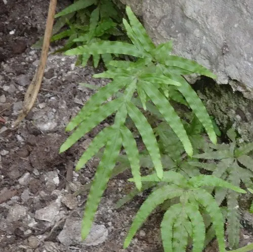

蕨类与裸子植物 · 植物界
井栏边草 Pteris multifida

井栏边草常生长在井沿、墙缝与阴湿石阶边，叶形像凤尾，是城市里最常见的蕨类之一，全草可入药。
- 分类
- 门蕨类植物门纲水龙骨纲目水龙骨目科凤尾蕨科属凤尾蕨属
- 栖息环境
- 井沿、墙缝、石阶、阴湿岩壁与林下，耐旱耐瘠薄
- 地理分布
- 中国长江流域及以南各地，东亚地区也有分布
- 保护级别
- 暂无评估；城市与乡村常见
物种志
井栏边草是凤尾蕨科的多年生蕨类，株高 20–60 cm。根状茎短而横走，密生黑褐色鳞片。叶簇生，叶柄细长，基部棕色；叶片为二回羽状复叶，羽片狭长如凤尾，末回小羽片线状披针形，边缘有锯齿，叶脉明显。能育叶的叶缘反卷，形成线形的孢子囊群，孢子成熟时呈褐色，不育叶较宽短。
井栏边草喜温暖湿润和半阴环境，耐旱、耐瘠薄，常生于井边、墙基、石阶缝、阴湿岩壁与林下，是城市和乡村最常见的野生蕨类之一。它以孢子繁殖，孢子随风散播，常成群出现在砖石缝隙里。全草入药，称“凤尾草”，有清热利湿、凉血解毒之效，民间用于痢疾、黄疸等症；也可盆栽观赏，是容易养护的耐阴植物。
形态与习性
- 株高20–60 cm
- 叶二回羽状复叶，羽片如凤尾
- 孢子囊群线形，生于能育叶边缘
- 习性耐旱耐瘠薄，喜阴湿
- 药用全草入药称“凤尾草”
- 分布常生于井边与砖石墙缝
趣味知识
- 井栏边草常从井沿、墙缝里钻出来，因此得名，生命力很顽强。
- 它的叶分能育叶和不育叶，能育叶边缘会反卷包住孢子囊群。
- 中药“凤尾草”就是它的全草，有清热利湿之效。